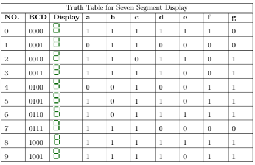
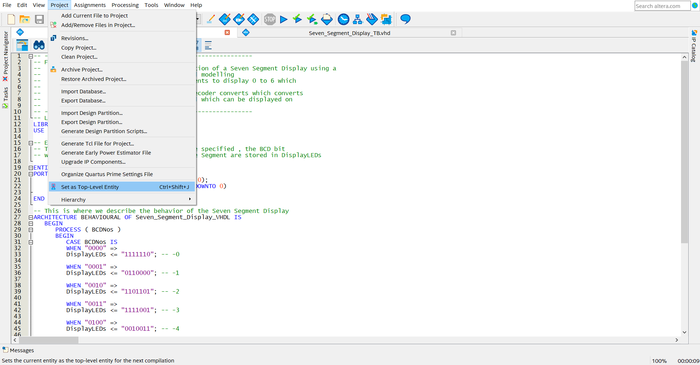
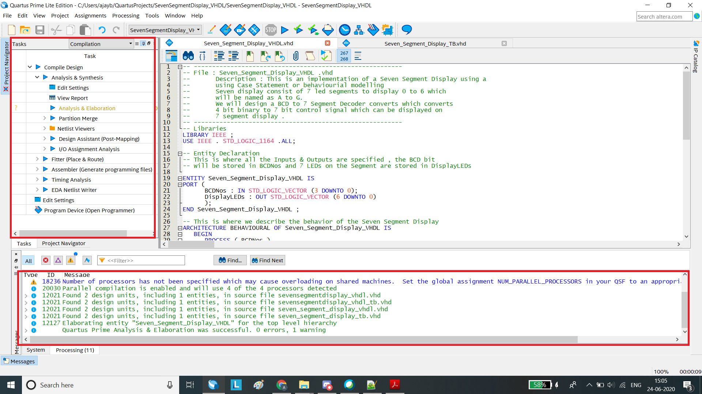
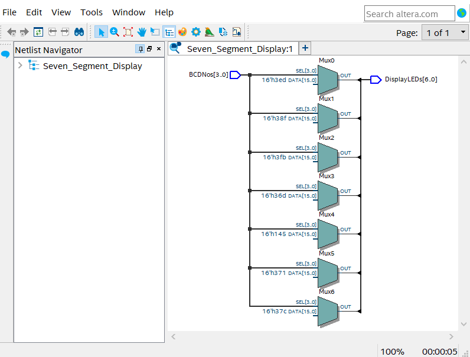
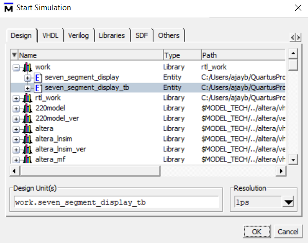

Seven Segment Display
1. Introduction
The Seven Segment display has seven LEDs arranged into the number eight. They are both cost-effective and easy to use. The Figure 1 shows a standard seven-segment display.
There are two types of seven-segment displays, Common Anode and Common Cathode. The Internal structure of both these types are identical except for the polarity of the LEDs and common terminal. The diagram below shows the internal structure of the common cathode seven-segment display(the one is used in this tutorial) and common anode seven-segment display.
The Common Cathode Display (CCD) – In the common cathode display, all the cathode connections of the LED’s are joined together to logic “0” or ground. The individual segments are illuminated by application of a “HIGH”, logic “1” signal to the individual Anode terminals.
The Common Anode Display (CAD) – In the common anode display, all the anode con- nections of the LED’s are joined together to logic “1” and the individual segments are illuminated by connecting the individual Cathode terminals to a “LOW”, logic “0” signal.
But, seven segment display does not work by directly supplying voltage to different segments of LEDs. First, our decimal number is changed to its BCD equivalent signal
then the BCD to seven segment decoder converts that signals to the a suitable format which is then fed to seven segment display.
This BCD to seven segment decoder has four input lines (A, B, C and D) and 7 output lines (a, b, c, d, e, f and g), this output is given to seven segment LED
display which displays the decimal number depending upon inputs.

2. Code
2.1 Verilog HDL code for Seven Segment Display
/// Verilog code for sevent segment display
// Define module
module seven_segment (
input [3:0]bcd , // Define all I/O ports
output reg [6:0] display );
// Define Always block ,this block is executed every time the
// input BCD value changes .
always @ ( bcd )
begin
case (bcd )
4’ b0000 : display <=7 ’ b1111110 ;// output port ’display ’ is assigned with
// seven segment equivalent of input BCD (0)
4’ b0001 : display <=7 ’ b0110000 ;// output port ’display ’ is assigned with
// seven segment equivalent of input BCD (1)
4’ b0010 : display <=7 ’ b1101101 ;// output port ’display ’ is assigned with
// seven segment equivalent of input BCD (2)
4’ b0011 : display <=7 ’ b1111001 ;// output port ’display ’ is assigned with
// seven segment equivalent of input BCD (3)
4’ b0100 : display <=7 ’ b0110011 ;// output port ’display ’ is assigned with
// seven segment equivalent of input BCD (4)
4’ b0101 : display <=7 ’ b1011011 ;// output port ’display ’ is assigned with
// seven segment equivalent of input BCD (5)
4’ b0110 : display <=7 ’ b1011111 ;// output port ’display ’ is assigned with
// seven segment equivalent of input BCD (6)
4’ b0111 : display <=7 ’ b1110000 ;// output port ’display ’ is assigned with
// seven segment equivalent of input BCD (7)
4’ b1000 : display <=7 ’ b1111111 ;// output port ’display ’ is assigned with
// seven segment equivalent of input BCD (8)
4’ b1001 : display <=7 ’ b1111011 ;// output port ’display ’ is assigned with
// seven segment equivalent of input BCD (9)
default : display <=7 ’ b0000000 ;
endcase // end of case block
end // end of always block
endmodule
Test Bench
2.2 Verilog HDL Test Bench code for Seven Segment Display
/// Verilog code for test bench of sevensegment
// Define module
module tb_seven_segment ;
reg [3:0] bcd ; reg clk ; // Define the input
wire [6:0] display ; // Define the outputs
// Map the I/O ports with UUT
seven_segment uut (. bcd (bcd ) ,. display ( display ));
// Define Initial block
initial begin
bcd =4 ’ b0000 ; // Initialise the input ’bcd ’ value to ’0’
end
// Initialize input ports with different combination of BCD data
initial begin
bcd = 4’ b0001 ;#100;
bcd = 4’ b0011 ;#100;
bcd = 4’ b1000 ;#100;
bcd = 4’ b1001 ;#100;
#100;
end // end of initial block .
endmodule
3. Implementing on quartus II
For in-depth guide for creating a New Project follow Getting Started with Quartus section from Task 0. Verilog HDL code is provided in this tutorial.
- Create a New Project with the following settings.
- Create a New Verilog HDL file. As we will be demonstrating using Verilog HDL code so select Verilog HDL file. Use the code for Seven Segment Display mentioned above in the code section in this document.
Go to File Save as. Enter the Name of file (it should be same as module/entity name), Enter correct file extension, for VHDL it is .vhd and for Verilog HDL it is .v and then Click on Save.
Goto Project menu Set as Top-Level Entity. The Seven_Segment_SDisplay file is our main file and make sure you have selected this file while setting the top level entity.
Goto Processing Start Compilation. It takes sometime to complete. You can verify whether all the files are compiled successfully by checking the highlighted tabs i.e. Messages and Tasks tab.


4. RTL Circuit of the implemented design
The Figure shown in step 2 below shows the RTL design of the Seven Segment Display circuit that we design using the above files. Here we can 7 select modules i.e 2:1 Muliplier, and one output and input block. The select lines for the Multiplier are from the 4-Bit DataBus input and the 7-Bit DataBus is the data line. If the input and the select lines matches for a particular Multiplier the the its 7 bit data is passed to the output.
Steps to get RTL circuit.
- Goto Tools→Netlist Viewers→RTL Viewer.
The below figure shows the equivalent RTL circuit of BCD decoder (4:7) or the design of Seven Segment Display using behavioral modelling.

5. Implementing on Modelsim
For more detailed procedure on using ModelSim, refer Getting Started with Quartus section from Task 0. You can find Verilog HDL Testbench code below.
- Create a New Verilog HDL file. Type in the Testbench code provided in this document and save the file with the same name as the module name.
- Go to Assignments→Settings.
Navigate to Simulation under EDA Tool Settings.Set the language as VHDL. Select Compile Test Bench and then click on Test Benches. You can find a detailed tutorial for setting a Test Bench file for simulation in the Getting Started with Quartus section from Task 0.
Click on Processing Start Compilation. This process will check for any illegal statement occured in any of the files and give the error messages in the Messages section.
5.1 Without TestBench
We can simulate our design without using a testbench file by using creating a University Program VWF file. You can find detailed steps to create and add Input and Output nodes in this files in the Task 0 document.
- Assign clock pulse to the inputs BCDNos[0 to 3] as per the given table and run the simulation.
After running the simulation you can see the following results, also you can notice for BCDNos "1010" to "1111" the output is zero because we mention the condition for input greater than 9 the output is null or zero.
| Input | Clock |
|---|---|
| DisplayLEDs[0] | 50ns |
| DisplayLEDs[1] | 100ns |
| DisplayLEDs[2] | 200ns |
| DisplayLEDs[3] | 400ns |

5.2 Functional Simulation using NativeLink Feature
Then Go to Tools -> Run Simulation Tool -> RTL Simulation to automatically run the EDA simulator(ModelSim-Altera) and to compile all necessary design files.
Finally ModelSim-Altera tool opens, Add the I/O pins as shown in the below figure. Double click on the testbench file under ’Library’ section,this adds the signals under ’Object’ section. Start the simulation and add the test bench file.Then select all the signals (A , B and C) and add it to ’wave’section.
- Start the simulation by clicking on the run all button in tool bar.
Navigating the simulation At this point you should have successfully run the simulation, but the waveform window is rather small and hard to see. We can move around in the simulation and see the value of the signals. Look for the cursor, a yellow vertical line in the waveform viewer, with the time in yellow at the bottom. You can use this line to move left or right in the waveform viewer and also zoom-in and zoom-out.

6. Testing the Design
6.1 Simulation waveform of our Design
The Result shown below can be verified by comparing it with the Truth Table.